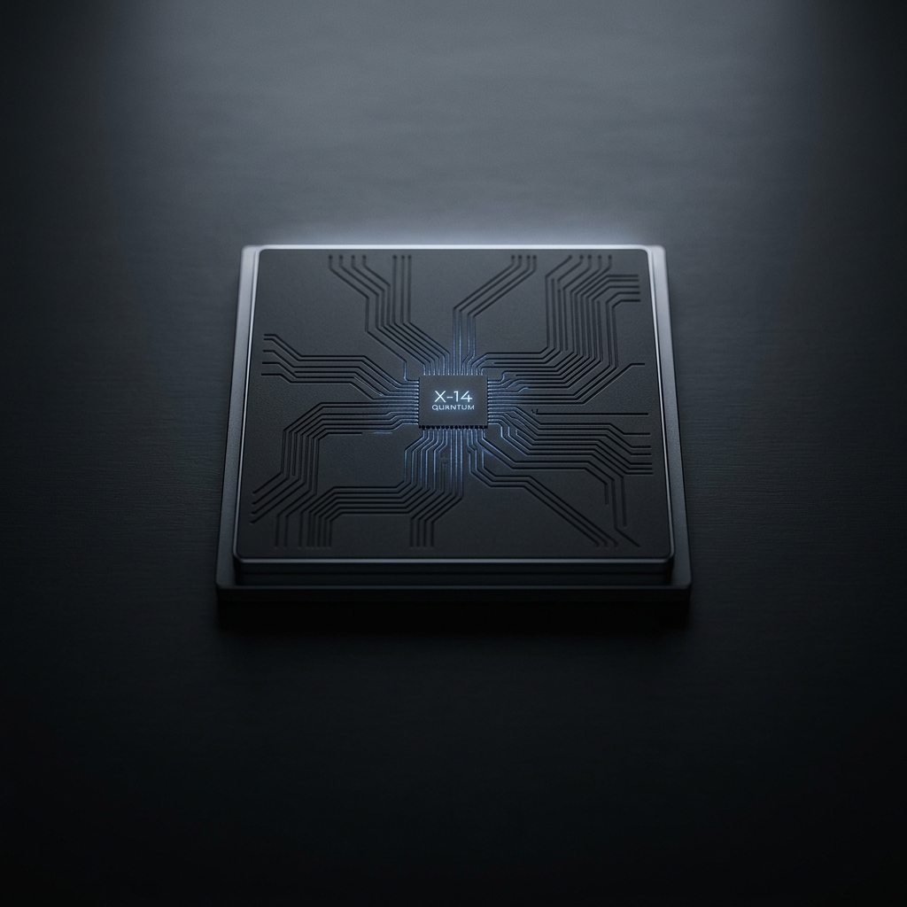
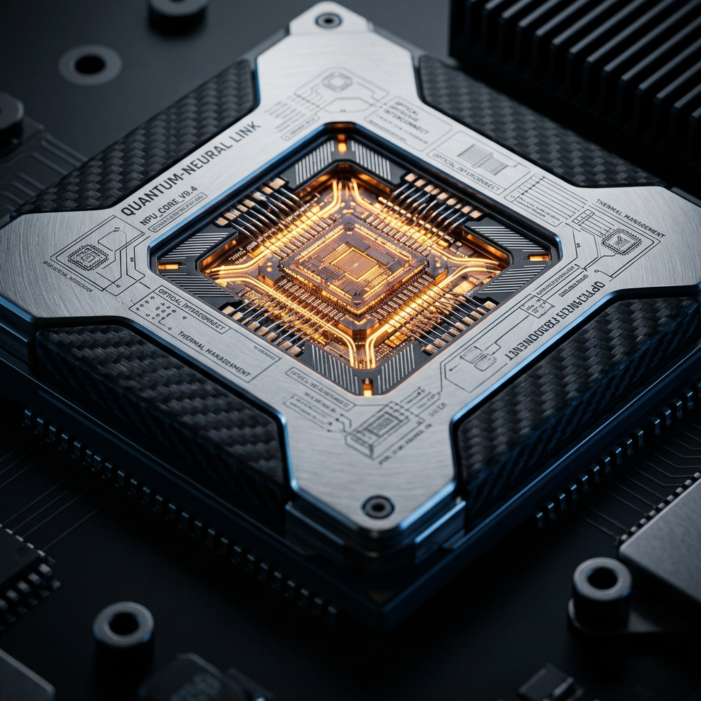
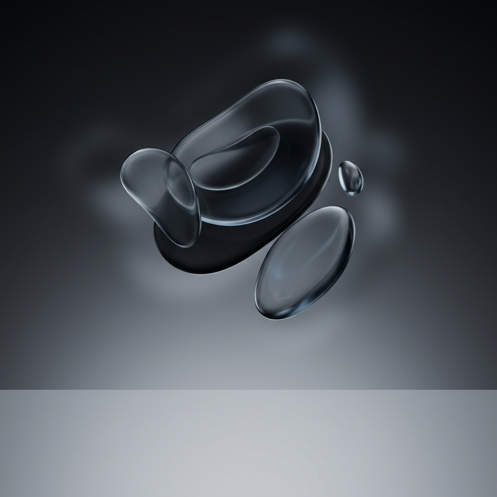

01 / IOT + EMBEDDED
Smart Systems
ESP32-powered prototypes built to sense, connect, and automate everyday environments.
001 / PROJECT ARCHIVE
Experiments where hardware, code, and curiosity meet. Every project begins with a question and ends with something you can use.
VIEW ALL ON GITHUB
01 / IOT + EMBEDDED
ESP32-powered prototypes built to sense, connect, and automate everyday environments.

02 / AI + SOFTWARE
Hands-on explorations of intelligent tools, practical interfaces, and ideas powered by AI.

03 / WEB + PRODUCT
Web experiences and useful tools designed with clear interaction, strong visuals, and real people in mind.
MORE IN THE WORKS
The archive grows as new ideas turn into working things.
Explore repositories